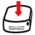

Software
Here you will find some software that I have developed.
Windows freeware
 Cracklock A software that fixes a recurring bug in today's software.
Cracklock A software that fixes a recurring bug in today's software.
 OncelesGL An OpenGL application that can represent
metaballs, simulate a FANUC robot and perform simple physics simulation (gravitation and collision detection).
OncelesGL An OpenGL application that can represent
metaballs, simulate a FANUC robot and perform simple physics simulation (gravitation and collision detection).
 Other software Sofware developed several years ago and not maintained anymore.
Latex packages and tools
LatexDaemon is a Windows program that precompiles the preamble of a Latex document, runs silently in the background and recompiles the body of the Latex document when it detects modifications in the source file.
Unicode fonts installer for Latex consists in a scripts that helps you to install Unicode TrueType fonts for Latex.
Pointing strings package for Latex is Latex package which allows you to typeset sequences with justification pointers (also called pointing strings) that commonly appears in computer science papers on Game Semantics.